人们想用 Three.js 做的最常见的事情之一 是加载并显示3D模型。常见的格式是 .OBJ 3D 格式，所以让我们尝试加载一个。
在网上搜索我发现 这个 CC-BY-NC 3.0 风车 3D 模型，作者：ahedov.
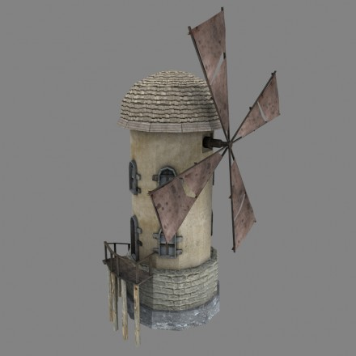
我从该网站下载了 .blend 文件，并将其加载到 Blender 并将其导出为 .OBJ 文件。
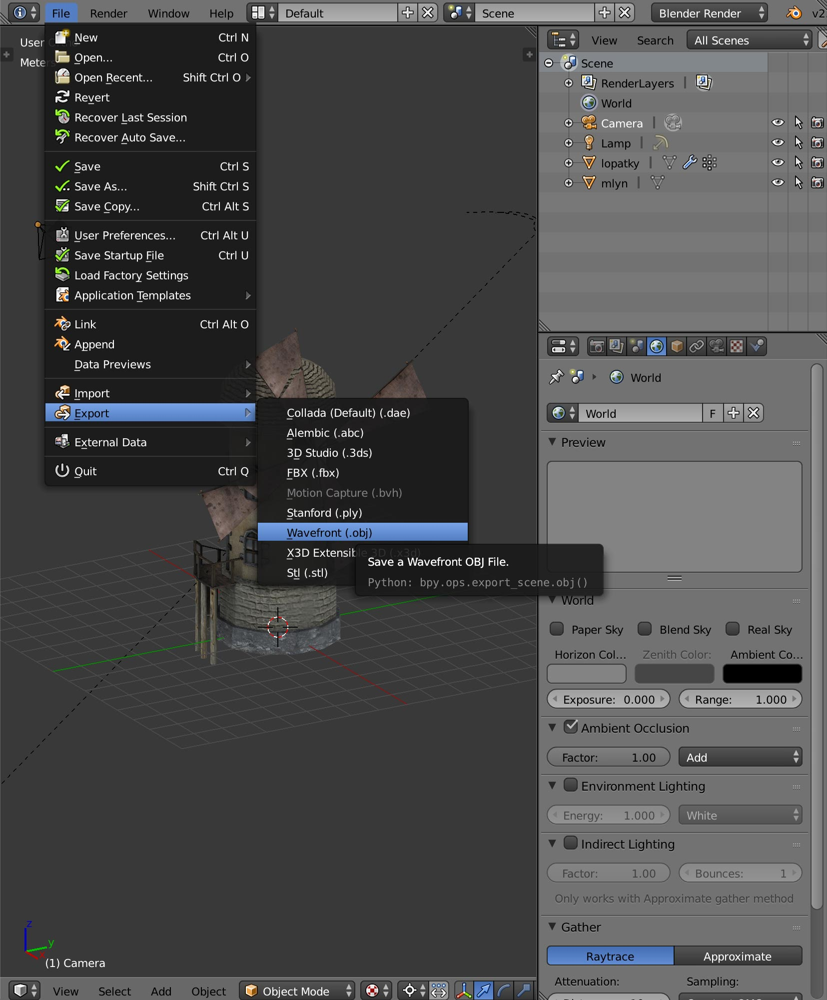
注意：如果您从未使用过 Blender，您可能会感到惊讶 因为 Blender 所做的事情与几乎所有的都不同 您曾经使用过的其他程序。请注意您可能需要 留出一些时间来阅读 Blender 的一些基本 UI 导航。
让我还补充一点，3D 程序一般来说都是庞然大物， 数千个功能。它们是那里最复杂的软件之一 群岛当我 1996 年第一次学习 3D Studio Max 时，我读完了 70% 600 页的手册，每天花费几个小时，持续大约 3 周。那付了钱 几年后当我学习 Maya 时，我学到了一些教训 之前学过的都适用于Maya。所以，请注意，如果您 确实希望能够使用 3D 软件来构建 3D 资产 或者修改现有的，将其列入您的日程安排并在某个时候清除 真正完成一些课程。
无论如何，我使用了这些导出选项
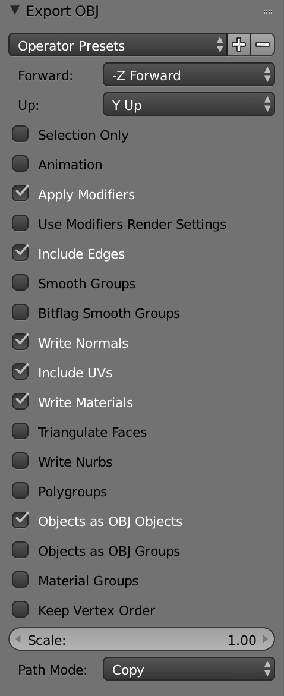
让我们尝试显示它！
我从定向照明示例开始
灯光文章，我将其与
半球形照明示例，所以我最终得到了一个
HemisphereLight 和一个DirectionalLight。我还删除了所有 GUI 的东西
与调节灯光有关。我还删除了立方体和球体
我们需要做的第一件事就是在我们的脚本中包含 OBJLoader 加载器。
import {OBJLoader} from 'three/addons/loaders/OBJLoader.js';
然后加载 .OBJ 文件，我们创建 OBJLoader,
将 .OBJ 文件的 URL 传递给它，并传递一个回调来添加
将加载的模型加载到我们的场景中。
{
const objLoader = new OBJLoader();
objLoader.load('resources/models/windmill/windmill.obj', (root) => {
scene.add(root);
});
}
如果我们运行会发生什么？
嗯，它很接近，但我们收到了有关材质的错误，因为我们还没有 给定场景任何材质，而 .OBJ 文件没有材质 参数。
.OBJ 加载器可以通过 名称/材料对的对象。当它加载 .OBJ 文件时， 它找到的任何材料名称都会寻找相应的材料 在装载机上设置的材料地图中。如果它找到一个 名称匹配的材料将使用该材料。如果 不会，它会使用加载器的默认材质。
有时.OBJ文件附带一个.MTL文件，该文件定义 材料。在我们的例子中，导出器还创建了一个 .MTL 文件。 .MTL 格式是纯 ASCII，因此很容易查看。看这里
# Blender MTL File: 'windmill_001.blend' # Material Count: 2 newmtl Material Ns 0.000000 Ka 1.000000 1.000000 1.000000 Kd 0.800000 0.800000 0.800000 Ks 0.000000 0.000000 0.000000 Ke 0.000000 0.000000 0.000000 Ni 1.000000 d 1.000000 illum 1 map_Kd windmill_001_lopatky_COL.jpg map_Bump windmill_001_lopatky_NOR.jpg newmtl windmill Ns 0.000000 Ka 1.000000 1.000000 1.000000 Kd 0.800000 0.800000 0.800000 Ks 0.000000 0.000000 0.000000 Ke 0.000000 0.000000 0.000000 Ni 1.000000 d 1.000000 illum 1 map_Kd windmill_001_base_COL.jpg map_Bump windmill_001_base_NOR.jpg map_Ns windmill_001_base_SPEC.jpg
我们可以看到有2个材质引用了5张jpg纹理 但是纹理文件在哪里？
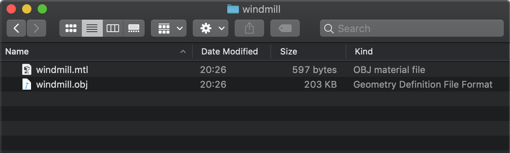
我们得到的只是一个.OBJ文件和一个.MTL文件。
至少对于这个模型来说，纹理是嵌入的 在我们下载的 .blend 文件中。我们可以要求搅拌机 通过选择文件->外部数据->将所有文件解压到文件中
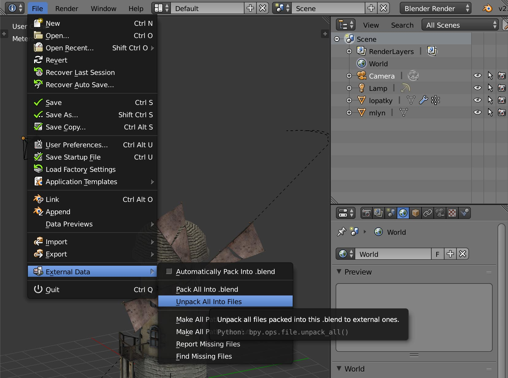
然后选择将文件写入当前目录
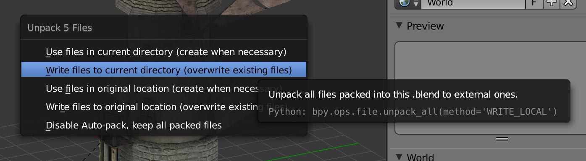
导出这些文件，这最终会将文件写入与 .blend 文件相同的文件夹中 在名为 textures 的子文件夹中。
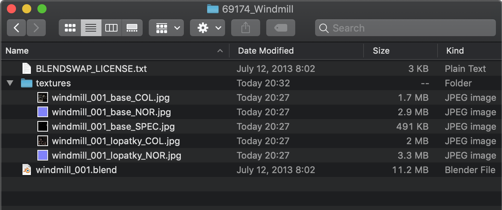
我将这些纹理复制到导出 .OBJ 的同一文件夹中 文件到.
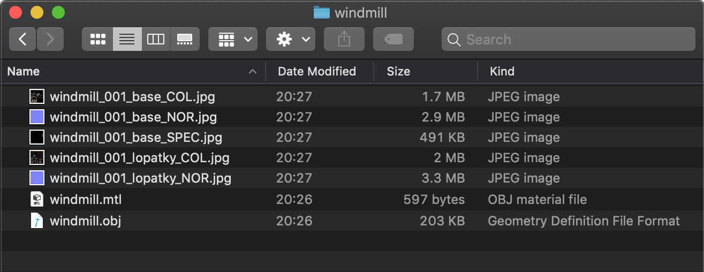
现在我们有了可用的纹理，我们可以加载.MTL文件.
首先我们需要包含MTLLoader;
import * as THREE from 'three';
import {OrbitControls} from 'three/addons/controls/OrbitControls.js';
import {OBJLoader} from 'three/addons/loaders/OBJLoader.js';
+import {MTLLoader} from 'three/addons/loaders/MTLLoader.js';
然后我们首先加载.MTL文件。加载完成后我们添加
刚刚加载的材料通过 OBJLoader 加载到 setMaterials 本身
然后加载.OBJ文件。
{
+ const mtlLoader = new MTLLoader();
+ mtlLoader.load('resources/models/windmill/windmill.mtl', (mtl) => {
+ mtl.preload();
+ objLoader.setMaterials(mtl);
objLoader.load('resources/models/windmill/windmill.obj', (root) => {
scene.add(root);
});
+ });
}
如果我们尝试...
请注意，如果我们旋转模型，您会看到风车布料 消失
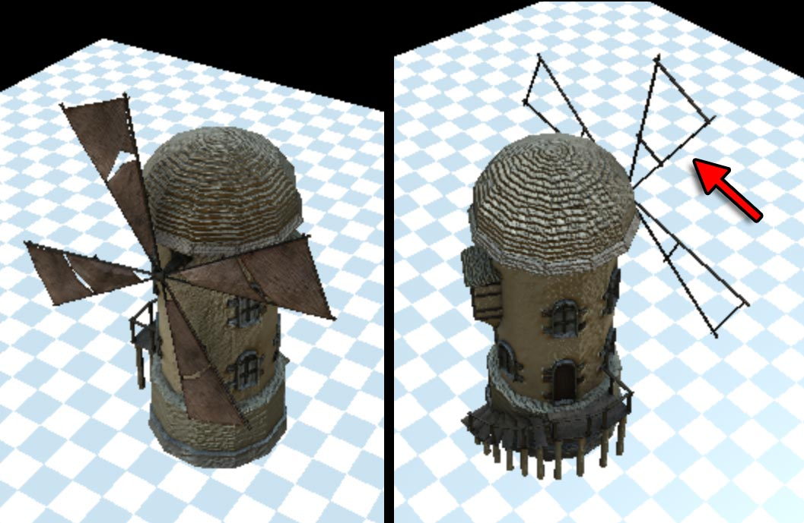
我们需要刀片上的材料是双面的，什么的 我们在有关材料的文章中进行了回顾。 没有简单的方法可以在 .MTL 文件中修复此问题。从我的顶部 我可以想到 3 种方法来解决这个问题。
加载后循环所有材料并将它们全部设置为双面。
const mtlLoader = new MTLLoader();
mtlLoader.load('resources/models/windmill/windmill.mtl', (mtl) => {
mtl.preload();
for (const material of Object.values(mtl.materials)) {
material.side = THREE.DoubleSide;
}
...
这个解决方案有效，但理想情况下我们只需要需要的材料 是双面的 是双面的，因为绘制双面 比单面慢。
手动设置特定材质
在.MTL文件中查看有2种材质。一个名为 "windmill"
另一个名为 "Material"。通过反复试验我发现
刀片使用名为 "Material" 的材料，因此我们可以设置
特别是
const mtlLoader = new MTLLoader();
mtlLoader.load('resources/models/windmill/windmill.mtl', (mtl) => {
mtl.preload();
mtl.materials.Material.side = THREE.DoubleSide;
...
认识到.MTL文件是有限的，我们不能使用它 而是自己创建材质。
在这种情况下，我们需要在之后查找 Mesh 对象
加载 obj 文件。
objLoader.load('resources/models/windmill/windmill.obj', (root) => {
const materials = {
Material: new THREE.MeshPhongMaterial({...}),
windmill: new THREE.MeshPhongMaterial({...}),
};
root.traverse(node => {
const material = materials[node.material?.name];
if (material) {
node.material = material;
}
})
scene.add(root);
});
您选择哪一个取决于您。 1是最简单的。 3最灵活。 2 介于两者之间。现在我将选择 2.
通过这一更改，您仍然应该看到刀片上的布料 从后面看，但还有一个问题。如果我们放大近 我们看到事情变得块状。
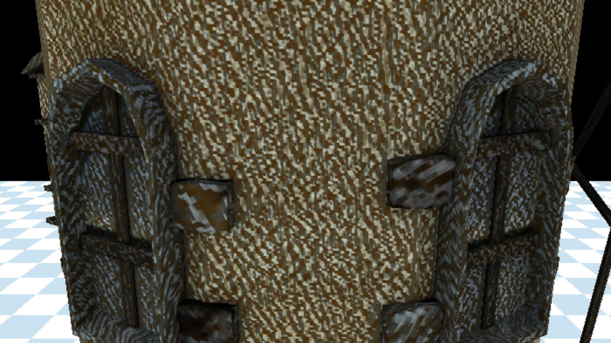
发生了什么事？
查看纹理，有 2 个纹理标记为 NOR，表示 NORMAL 贴图。 看着它们，它们看起来就像普通的地图。法线贴图一般是 紫色，凹凸贴图是黑色和白色。法线贴图代表 表面的方向，其中凹凸贴图代表高度 表面.
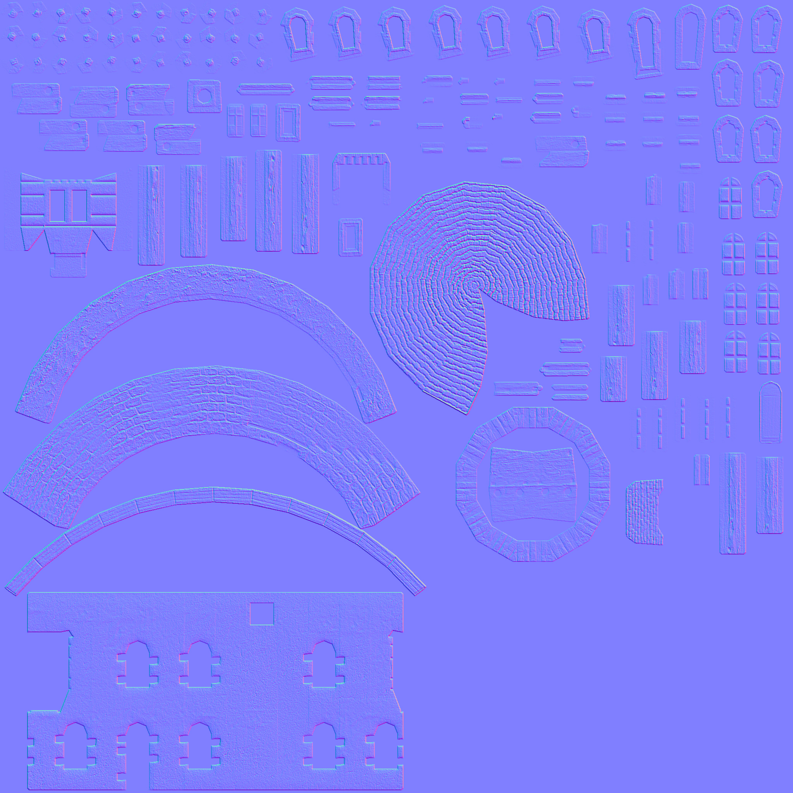
查看MTLLoader的源代码
它需要关键字 norm 作为法线贴图，所以让我们编辑 .MTL 文件
# Blender MTL File: 'windmill_001.blend' # Material Count: 2 newmtl Material Ns 0.000000 Ka 1.000000 1.000000 1.000000 Kd 0.800000 0.800000 0.800000 Ks 0.000000 0.000000 0.000000 Ke 0.000000 0.000000 0.000000 Ni 1.000000 d 1.000000 illum 1 map_Kd windmill_001_lopatky_COL.jpg -map_Bump windmill_001_lopatky_NOR.jpg +norm windmill_001_lopatky_NOR.jpg newmtl windmill Ns 0.000000 Ka 1.000000 1.000000 1.000000 Kd 0.800000 0.800000 0.800000 Ks 0.000000 0.000000 0.000000 Ke 0.000000 0.000000 0.000000 Ni 1.000000 d 1.000000 illum 1 map_Kd windmill_001_base_COL.jpg -map_Bump windmill_001_base_NOR.jpg +norm windmill_001_base_NOR.jpg map_Ns windmill_001_base_SPEC.jpg
现在，当我们加载它时，它将使用法线贴图作为法线贴图， 我们可以看到叶片的背面。
让我们加载一个不同的文件。
在网上搜索我发现了这个 CC-BY-NC 风车 3D 模型，由 Roger Gerzner / GERIZ.3D Art.
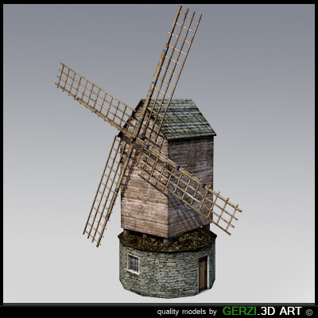
它已经有 .OBJ 版本。让我们加载它（注意我现在删除了 .MTL 加载器）
- objLoader.load('resources/models/windmill/windmill.obj', ...
+ objLoader.load('resources/models/windmill-2/windmill.obj', ...
Hmmm，什么也没有出现。有什么问题吗？我想知道模型尺寸是多少？ 我们可以询问 THREE.js 模型的大小，并尝试设置我们的 自动摄像头。
首先我们可以要求 THREE.js 计算一个包含场景的盒子 我们刚刚加载并询问其大小和中心
objLoader.load('resources/models/windmill_2/windmill.obj', (root) => {
scene.add(root);
+ const box = new THREE.Box3().setFromObject(root);
+ const boxSize = box.getSize(new THREE.Vector3()).length();
+ const boxCenter = box.getCenter(new THREE.Vector3());
+ console.log(boxSize);
+ console.log(boxCenter);
查看JavaScript控制台我看到
size 2123.6499788469982
center p {x: -0.00006103515625, y: 770.0909731090069, z: -3.313507080078125}
我们的相机目前仅显示大约100个单位，near为0.1， far 为 100。
我们的地平面只有 40 个单位宽，所以基本上这个风车模型很大，有 2000 个单位，
它围绕着我们的相机及其所有部分在我们的视锥体之外。
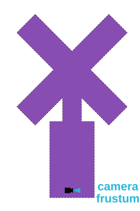
我们可以手动修复这个问题，但我们也可以让相机自动构建我们的场景。 让我们试试吧。然后我们可以使用我们刚刚计算的框将相机设置调整为 查看整个场景。请注意，没有正确答案 关于相机的放置位置。我们可以从任何方向、任何方向面对场景 高度，所以我们只需要选择一些东西。
正如我们在关于相机的文章中讨论的那样，相机定义了一个平截头体。
该截锥体由视野 (fov) 以及 near 和 far 设置定义。我们
想知道无论相机当前的视野如何，相机的距离有多远
需要这样，以便包含场景的盒子适合平截头体（假设平截头体）
永远延长。换句话说，我们假设 near 是 0.00000001 并且 far 是无穷大。
因为我们知道盒子的大小并且我们知道视野，所以我们有这个三角形
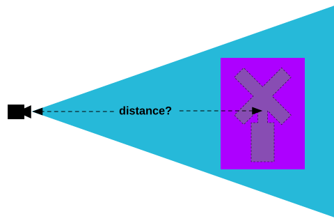
你可以看到左边是相机，蓝色的平截头体突出在 在它的前面。我们刚刚计算了包含风车的盒子。我们需要 计算相机距离盒子有多远才能出现盒子 在平截头体内部。
使用基本的直角三角形三角函数和SOHCAHTOA， 鉴于我们知道平截头体的视野并且知道盒子的大小，我们可以计算距离。
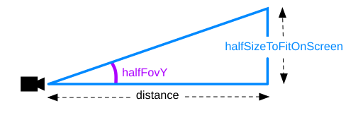
根据该图，计算距离的公式为
distance = halfSizeToFitOnScreen / tangent(halfFovY)
让我们将其转换为代码。首先让我们创建一个函数来计算 distance 然后移动
距框中心 distance 单位的相机。然后我们将指向
相机位于盒子的 center 处。
function frameArea(sizeToFitOnScreen, boxSize, boxCenter, camera) {
const halfSizeToFitOnScreen = sizeToFitOnScreen * 0.5;
const halfFovY = THREE.MathUtils.degToRad(camera.fov * .5);
const distance = halfSizeToFitOnScreen / Math.tan(halfFovY);
// compute a unit vector that points in the direction the camera is now
// from the center of the box
const direction = (new THREE.Vector3()).subVectors(camera.position, boxCenter).normalize();
// move the camera to a position distance units way from the center
// in whatever direction the camera was from the center already
camera.position.copy(direction.multiplyScalar(distance).add(boxCenter));
// pick some near and far values for the frustum that
// will contain the box.
camera.near = boxSize / 100;
camera.far = boxSize * 100;
camera.updateProjectionMatrix();
// point the camera to look at the center of the box
camera.lookAt(boxCenter.x, boxCenter.y, boxCenter.z);
}
我们传递 2 个尺寸。 boxSize 和 sizeToFitOnScreen。如果我们刚刚传入 boxSize
并将其用作 sizeToFitOnScreen 那么数学将使盒子完全适合里面
截锥体。我们想要上面和下面有一点额外的空间，所以我们会稍微传递一点
尺寸较大。
{
const objLoader = new OBJLoader();
objLoader.load('resources/models/windmill_2/windmill.obj', (root) => {
scene.add(root);
+ // compute the box that contains all the stuff
+ // from root and below
+ const box = new THREE.Box3().setFromObject(root);
+
+ const boxSize = box.getSize(new THREE.Vector3()).length();
+ const boxCenter = box.getCenter(new THREE.Vector3());
+
+ // set the camera to frame the box
+ frameArea(boxSize * 1.2, boxSize, boxCenter, camera);
+
+ // update the Trackball controls to handle the new size
+ controls.maxDistance = boxSize * 10;
+ controls.target.copy(boxCenter);
+ controls.update();
});
}
您可以在上面看到我们传入 boxSize * 1.2 以便在尝试时在框上方和下方多出 20% 的空间
将其安装在截锥体内。我们还更新了 OrbitControls，以便相机围绕中心运行
场景的.
现在，如果我们尝试，我们会得到...
这几乎可以工作。使用鼠标旋转相机即可
应该看到风车。问题是风车很大，而盒子的中心大约在 (0, 770, 0) 处。所以，当我们将相机从原来的位置移动时
从相机方向的中心开始 (0, 10, 20) 到 distance 个单位
相对于将相机几乎笔直向下移动的中心
风车.
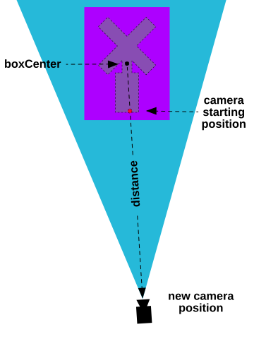
让我们将其更改为从盒子中心向侧面移动到任意方向
相机来自中心。我们需要做的就是将 y 组件清零
从盒子到相机的矢量。然后，当我们标准化该向量时，它将
成为平行于 XZ 平面的向量。换句话说，平行于地面。
-// compute a unit vector that points in the direction the camera is now -// from the center of the box -const direction = (new THREE.Vector3()).subVectors(camera.position, boxCenter).normalize(); +// compute a unit vector that points in the direction the camera is now +// in the xz plane from the center of the box +const direction = (new THREE.Vector3()) + .subVectors(camera.position, boxCenter) + .multiply(new THREE.Vector3(1, 0, 1)) + .normalize();
如果你看风车的底部，你会看到一个小正方形。那是我们的地盘 飞机。
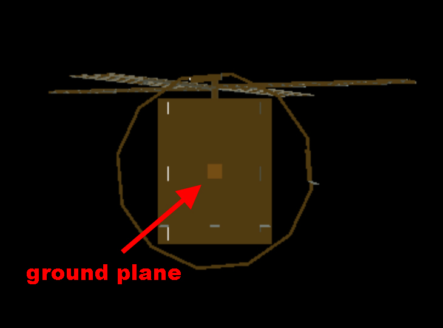
它只有 40x40 单位，因此相对于风车来说太小了。 由于风车有 2000 多个单位大，我们将地平面的大小更改为 更合适的东西。我们还需要调整重复，否则我们的棋盘 效果会很好，除非我们放大，否则我们甚至看不到它。
-const planeSize = 40;
+const planeSize = 4000;
const loader = new THREE.TextureLoader();
const texture = loader.load('resources/images/checker.png');
texture.wrapS = THREE.RepeatWrapping;
texture.wrapT = THREE.RepeatWrapping;
texture.magFilter = THREE.NearestFilter;
-const repeats = planeSize / 2;
+const repeats = planeSize / 200;
texture.repeat.set(repeats, repeats);
现在我们可以看到这个风车
让我们将材质添加回去。像之前一样，有一个 .MTL 文件引用 一些纹理，但查看文件我很快就发现了一个问题。
$ ls -l windmill -rw-r--r--@ 1 gregg staff 299 May 20 2009 windmill.mtl -rw-r--r--@ 1 gregg staff 142989 May 20 2009 windmill.obj -rw-r--r--@ 1 gregg staff 12582956 Apr 19 2009 windmill_diffuse.tga -rw-r--r--@ 1 gregg staff 12582956 Apr 20 2009 windmill_normal.tga -rw-r--r--@ 1 gregg staff 12582956 Apr 19 2009 windmill_spec.tga
有 TARGA (.tga) 文件，而且它们很大！
THREE.js 实际上确实有一个 TGA 加载器，但在大多数使用场景下使用它可能不太合适。 如果你正在制作一个浏览器，想让用户能够查看他们在网上找到的随机 3D 文件，那么也许，也许，你可能会想要加载 TGA 文件。(*)
TGA 文件的一个问题是它们几乎无法很好压缩。TGA 只支持非常简单的压缩，看上面我们可以看到这些文件根本没有被压缩，因为它们完全相同大小的可能性极低。此外，它们每个文件竟然有 12 兆字节！！！如果我们使用这些文件，用户就必须下载 36 兆字节才能看到风车。
TGA 的另一个问题是浏览器本身不支持它们，因此加载它们可能比加载像 .JPG 和 .PNG 这样的支持格式要慢。
我很确定，对于我们的用途，将它们转换为 .JPG 会是最佳选择。查看文件内容，我发现它们每个都是 3 个通道，RGB，没有 alpha 通道。JPG 只支持 3 个通道，所以很适合。JPG 也支持有损压缩，因此我们可以让文件更小以便下载。
加载这些文件时，它们每个都是 2048x2048。在我看来，这似乎有些浪费，但当然这取决于你的使用情况。我把它们每个改为 1024x1024，并在 Photoshop 中以 50% 的质量设置保存。获取文件列表
$ ls -l ../threejs.org/manual/examples/resources/models/windmill -rw-r--r--@ 1 gregg staff 299 May 20 2009 windmill.mtl -rw-r--r--@ 1 gregg staff 142989 May 20 2009 windmill.obj -rw-r--r--@ 1 gregg staff 259927 Nov 7 18:37 windmill_diffuse.jpg -rw-r--r--@ 1 gregg staff 98013 Nov 7 18:38 windmill_normal.jpg -rw-r--r--@ 1 gregg staff 191864 Nov 7 18:39 windmill_spec.jpg
我们从36兆降到了0.55兆！当然，艺术家可能不会对这种压缩感到满意，所以一定要和他们商量以讨论权衡。
现在，要使用.MTL文件，我们需要编辑它以引用.JPG文件，而不是.TGA文件。幸运的是，它是一个简单的文本文件，所以很容易编辑
newmtl blinn1SG Ka 0.10 0.10 0.10 Kd 0.00 0.00 0.00 Ks 0.00 0.00 0.00 Ke 0.00 0.00 0.00 Ns 0.060000 Ni 1.500000 d 1.000000 Tr 0.000000 Tf 1.000000 1.000000 1.000000 illum 2 -map_Kd windmill_diffuse.tga +map_Kd windmill_diffuse.jpg -map_Ks windmill_spec.tga +map_Ks windmill_spec.jpg -map_bump windmill_normal.tga -bump windmill_normal.tga +map_bump windmill_normal.jpg +bump windmill_normal.jpg
现在.MTL文件指向一些合理大小的贴图，我们需要加载它，所以我们就像上面一样操作，先加载材质，然后将它们设置到OBJLoader
{
+ const mtlLoader = new MTLLoader();
+ mtlLoader.load('resources/models/windmill_2/windmill-fixed.mtl', (mtl) => {
+ mtl.preload();
+ const objLoader = new OBJLoader();
+ objLoader.setMaterials(mtl);
objLoader.load('resources/models/windmill/windmill.obj', (root) => {
root.updateMatrixWorld();
scene.add(root);
// compute the box that contains all the stuff
// from root and below
const box = new THREE.Box3().setFromObject(root);
const boxSize = box.getSize(new THREE.Vector3()).length();
const boxCenter = box.getCenter(new THREE.Vector3());
// set the camera to frame the box
frameArea(boxSize * 1.2, boxSize, boxCenter, camera);
// update the Trackball controls to handle the new size
controls.maxDistance = boxSize * 10;
controls.target.copy(boxCenter);
controls.update();
});
+ });
}
在我们实际尝试之前，我遇到了一些问题，与其显示失败，我就直接讲解这些问题。
问题 #1：三个 MTLLoader 会创建将材质的漫反射颜色与漫反射纹理图相乘的材质。
这是一个有用的功能，但查看上面的 .MTL 文件，该行
Kd 0.00 0.00 0.00
将漫反射颜色设置为 0。纹理贴图 * 0 = 黑色！可能用于制作风车的建模工具没有将漫反射纹理图与漫反射颜色相乘。这就是为什么它对制作这个风车的艺术家有效的原因。
要解决这个问题，我们可以将该行更改为
Kd 1.00 1.00 1.00
，因为纹理贴图 * 1 = 纹理贴图。
问题 #2：高光颜色也是黑色
以 Ks 开头的那一行指定了镜面反射颜色。用于制作风车的建模软件很可能像处理漫反射贴图一样，对镜面反射贴图的颜色用于镜面高光。Three.js 仅使用镜面反射贴图的红色通道作为反射镜面颜色的输入，但仍然需要设置镜面反射颜色。
像上面一样，我们可以通过编辑 .MTL 文件来解决这个问题。
-Ks 0.00 0.00 0.00 +Ks 1.00 1.00 1.00
问题 #3: windmill_normal.jpg 是法线贴图，而不是凹凸贴图。
就像上面一样，我们只需要编辑 .MTL 文件。
-map_bump windmill_normal.jpg -bump windmill_normal.jpg +norm windmill_normal.jpg
综上所述，如果我们现在尝试加载，它应该能够带着材质加载。
加载模型时经常会遇到这些问题。常见问题包括：
需要了解大小
上面我们让相机尝试对场景进行取景，但这并不总是合适的做法。通常最合适的做法是自己制作模型或下载模型，在某些 3D 软件中加载它们，查看它们的比例，并在需要时进行调整。
方向错误
THREE.js 通常 Y 轴为上。一些建模软件默认 Z 轴为上，一些则是 Y 轴为上。有些软件可以设置。如果你遇到这种情况，即加载模型后它是侧躺的，你可以选择在加载后通过代码旋转模型（不推荐），或者你可以将模型加载到你喜欢的建模软件中，或者使用一些命令行工具将对象旋转到你需要的方向，就像你编辑网站的图片一样，而不是下载后再用代码调整。Blender 在导出时甚至有选项可以改变方向。
没有 .MTL 文件或材质错误或参数不兼容
上面我们使用了一个 .MTL 文件，它帮助我们加载了材质，但出现了一些问题。我们手动编辑了 .MTL 文件来修复。 通常也会查看 .OBJ 文件，看里面有哪些材质，或者在 THREE.js 中加载 .OBJ 文件，遍历场景并打印出所有材质。然后，修改代码以创建自定义材质，并在适当的位置分配它们，要么通过创建一个名称/材质对对象传递给加载器来代替加载 .MTL 文件，要么在场景加载后，遍历场景并进行修正。
纹理也太大
大多数3D模型都是为建筑、电影和广告，或者游戏制作的。对于建筑和电影来说，几乎没人关心纹理的大小。对于游戏来说，人们会关心，因为游戏有内存限制，但大多数游戏是在本地运行的。然而，对于网页，你希望加载尽可能快，因此你需要查看纹理，并尽量将它们做得尽可能小，同时仍然保持良好的效果。事实上，第一个风车模型我们可能本应该处理一下纹理。它们目前总共是10兆！！！
另外，记住正如我们在纹理文章中提到的，纹理会占用内存，所以一个50k的JPG，如果扩展到4096x4096，下载速度会很快，但仍然会占用大量内存。
我最后想展示的是旋转风车。不幸的是，.OBJ 文件没有层次结构。这意味着每个风车的所有部件基本上都被视为一个单独的网格。你无法旋转风车的叶片，因为它们没有从建筑的其余部分分离出来。
这是 .OBJ 格式不太理想的主要原因之一。如果要猜测，它比其他格式更常见的原因是因为它简单，并且不支持很多功能，但在大多数情况下都能使用。尤其是当你制作的是静态的东西，比如建筑图像，并且不需要任何动画时，它是将静态道具导入场景的不错方式。
接下来我们将尝试加载 gLTF 场景。gLTF 格式支持更多功能。